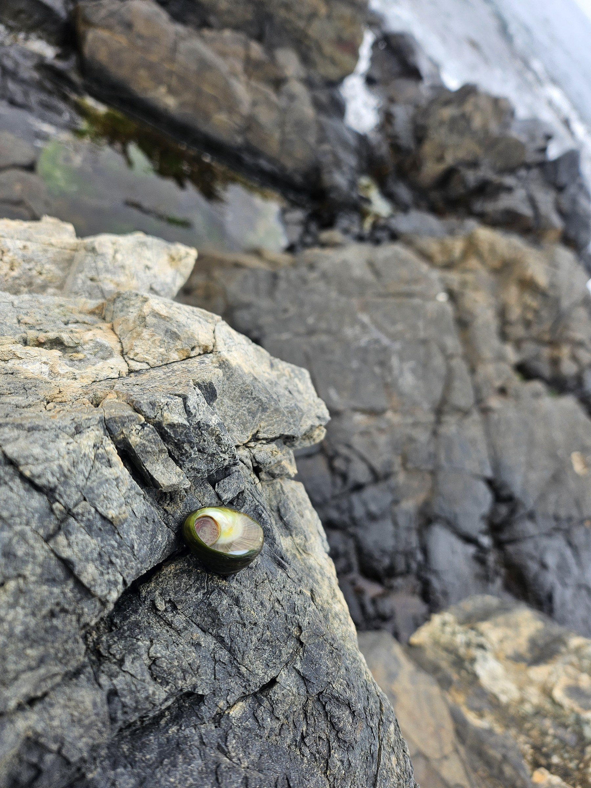
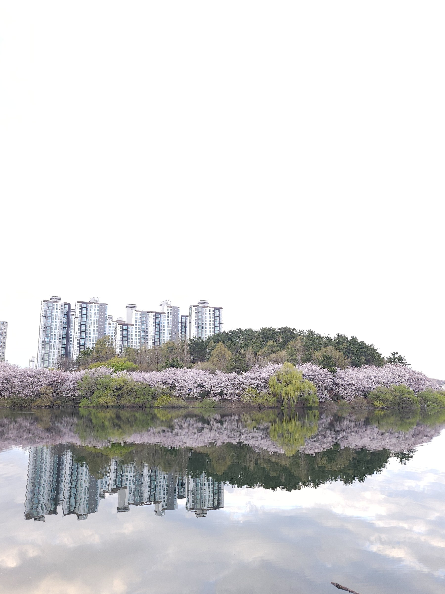
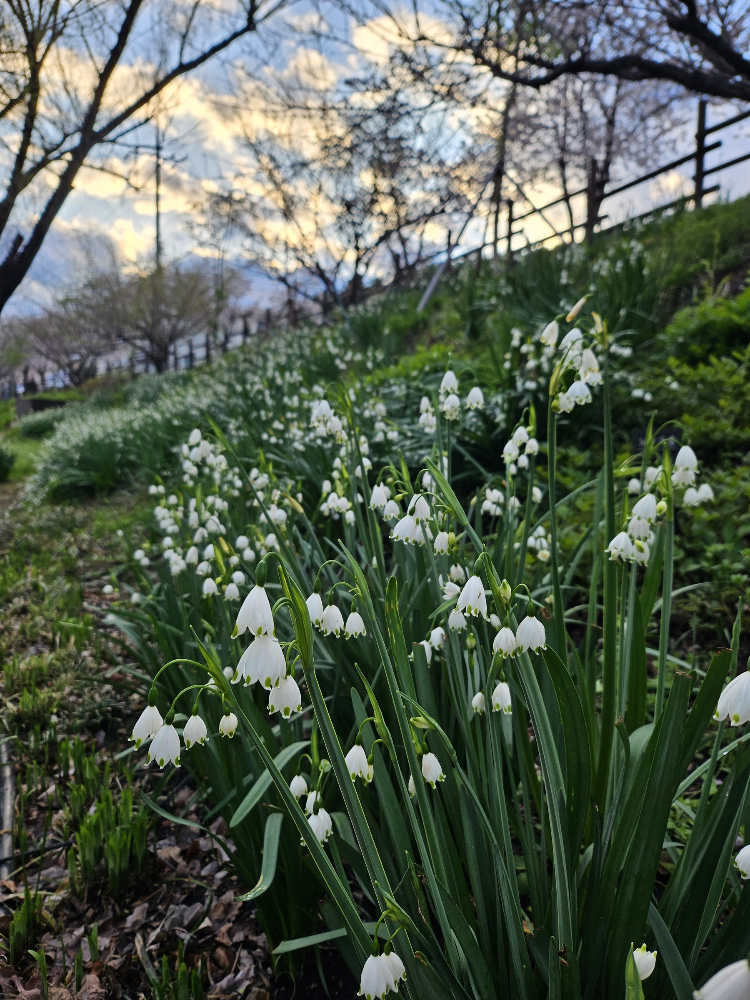
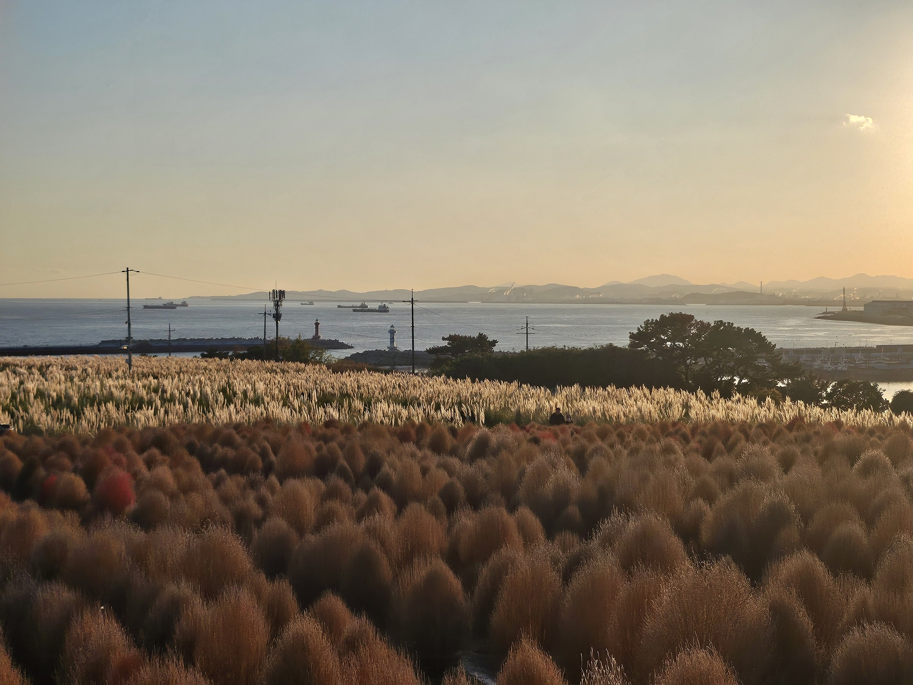

비어있는 공간
새로운 아이디어와 기록을 위해 남겨둔 여백입니다.
블로그 글, 사진 모음, 또는 새로운 시도를 자유롭게 채워 넣으실 수 있습니다.
📷 Photo Archives
카드를 클릭하면 사진을 크게 감상할 수 있습니다

울산 대왕암

선암호수공원 (봄)

선암호수공원 (산책로)

새로운 아이디어와 기록을 위해 남겨둔 여백입니다.
블로그 글, 사진 모음, 또는 새로운 시도를 자유롭게 채워 넣으실 수 있습니다.
카드를 클릭하면 사진을 크게 감상할 수 있습니다



